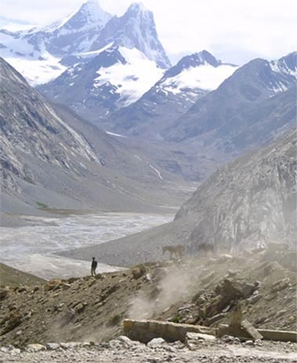
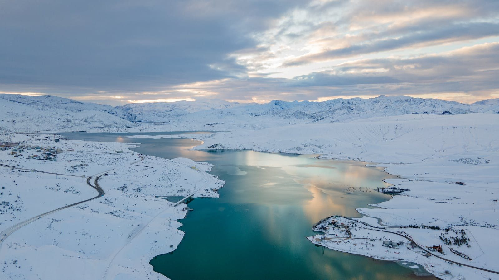
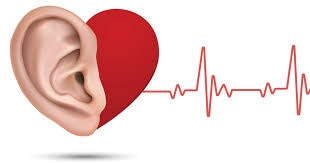
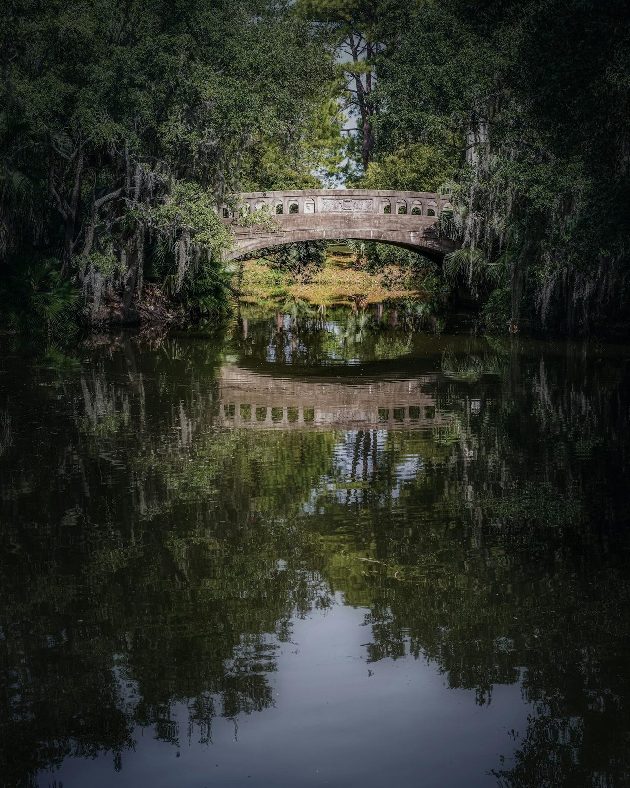
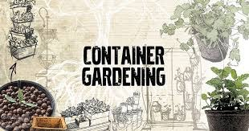
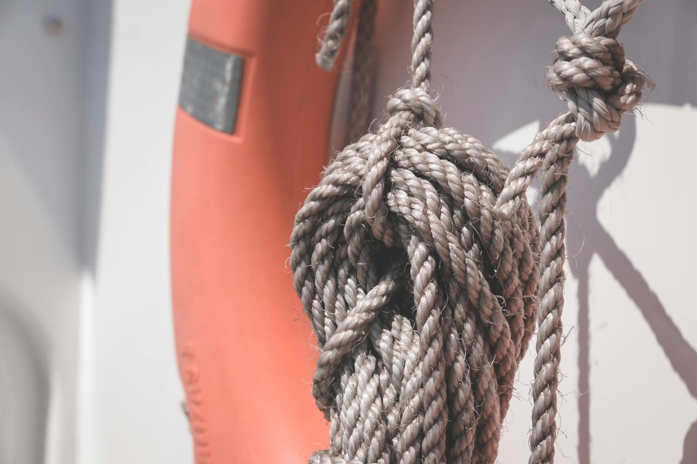
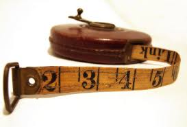
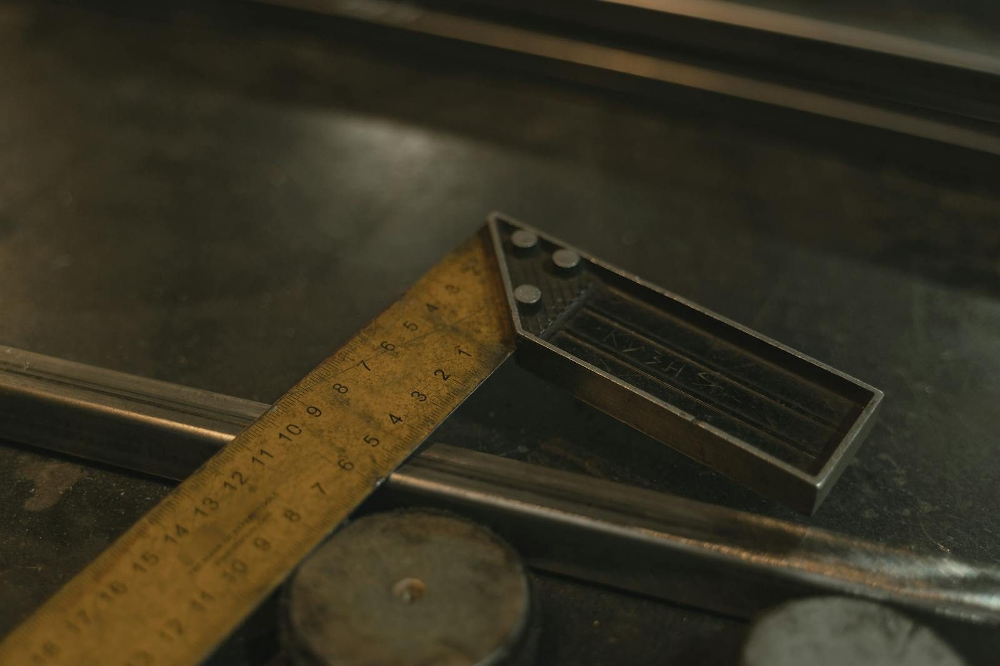

E1 — The journey / terrain ahead PROPOSED
The Himalayan-trek photo currently reused in 5 chapters (Intro · Future Development; Vol 2 epilogue; Vol 3 appendix; Vol 4 research design; Vol 5 measuring at scale). One replacement would go in all five.
Current (low-res, ×5)

Proposed — free (Pexels)

SWAP → a sweeping snowy valley vista. It's cold/aerial rather than a path — say the word and I'll get a warmer winding-trail instead.
E2 — The Bridge from Knowing to Doing PROPOSED
Vol 2 · Introduction — The Bridge from Knowing to Doing · image-014.jpeg (water from a pipe)
Current (low-res)

Proposed — free (Pexels)

SWAP → an arched stone bridge over a river (literal "bridge" crossing)
E3 — Emotional Knots PROPOSED
Vol 2 · Exploration 2 — Emotional Knots · image-015.jpeg (tangled rope, B/W)
Current (low-res)

Proposed — free (Pexels)

SWAP → a tangled, knotted rope. (A life-ring shares the frame — I can get a cleaner pure-rope knot if you prefer.)
E4 — The Case for Quantification PROPOSED
Vol 3 · Exploration 1 — The Case for Quantification · image-009.jpeg (vintage tape measure)
Current (low-res)

Proposed — free (Pexels)

SWAP → an old folding ruler + machinist's square (timeless "measurement")